1. Decay
Momentum \( \gamma \) fades older blocks, matching the lower fill levels on the stale side of the figure.
ICML 2026
Coherent Coordinate Descent with Implicit Landscape Smoothing for Lightweight Zeroth-Order Optimization
Department of Computer Science, Yale University
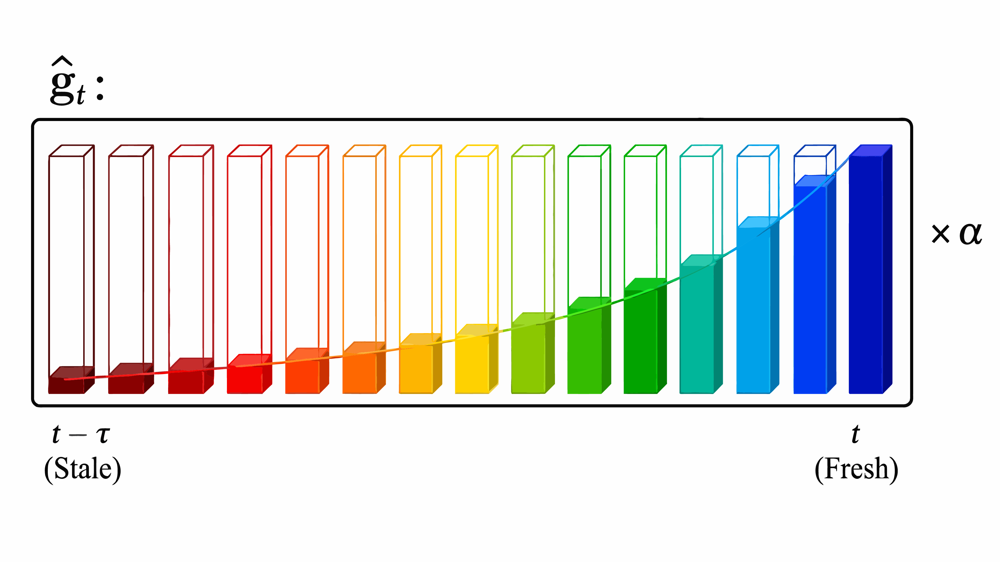
1. Decay
Momentum \( \gamma \) fades older blocks, matching the lower fill levels on the stale side of the figure.
2. Refresh
A cyclic schedule overwrites \(B\) coordinates with fresh finite differences at the current parameters.
3. Descend
The decay-weighted blocks form \( \hat{\mathbf{g}}_t \), then \( \alpha \) scales the parameter step.
Each cuboid is a block of coordinate gradient estimates, ordered from the stalest block evaluated at \(t-\tau\) to the freshest block at \(t\). The fill levels encode the momentum term \( \gamma \): fresher estimates receive larger weights before all blocks accumulate into \( \hat{\mathbf{g}}_t \) and scale the update by \( \alpha \).
\( \gamma=0 \) recovers Block Cyclic Coordinate Descent (BCCD); \( \gamma=1 \) keeps full stale-gradient history until coordinates are refreshed; \(0 < \gamma < 1\) fades older estimates.
Lay Summary
Many machine learning systems improve by using gradients: signals that indicate how their parameters should change. However, gradients are not always available. For example, a model may run on a small device with limited memory, or the system being optimized may only allow us to test how well a solution works without revealing its internal details. We introduce Coherent Coordinate Descent, a method for improving such systems using only these tests. At each step, it still updates the whole model, but only recomputes fresh information for a small subset of parameters. For the remaining parameters, it reuses older information with a decay factor, so recent estimates matter more than older ones. The key idea is that learning usually changes smoothly, so past information can remain useful when reused carefully. In experiments on neural networks, our method learned more stably and efficiently than standard alternatives. This could make machine learning easier to use in black-box systems and on low-memory devices.
Gradient history supplies dense update directions even when only a small coordinate budget is refreshed at one step.
A finite-difference radius can average away small-scale landscape oscillations instead of only acting as approximation error.
Compute and memory budgets are explicit: the cyclic buffer can preserve or truncate old estimates as hardware allows.
Zeroth-Order (ZO) optimization is pivotal for scenarios where backpropagation is unavailable, such as memory-constrained on-device learning and black-box optimization. However, existing methods face a stark trade-off: they are either sample-inefficient (e.g., standard finite differences) or suffer from high variance due to randomized estimation (e.g., random subspace methods). In this work, we propose Coherent Coordinate Descent (CoCD), a deterministic, sample-efficient, and budget-aware ZO optimizer. Theoretically, we formalize the notion of gradient coherence and demonstrate that CoCD is equivalent to Block Cyclic Coordinate Descent (BCCD) with "warm starts," effectively converting historical (stale) gradients from a liability into a computational asset. This mechanism enables \(O(1)\) query complexity per step while maintaining global descent directions. Furthermore, we derive error bounds revealing a counter-intuitive insight: larger finite-difference step sizes can induce an implicit smoothing effect on the optimization landscape by reducing the effective smoothness constant, thereby improving convergence stability. Experiments on MLP, CNN, and ResNet architectures (up to 270k parameters) demonstrate that CoCD significantly outperforms BCCD in terms of sample efficiency and convergence loss/accuracy, and exhibits superior stability over randomized ZO methods. Our results suggest that deterministic, structure-aware updates offer a superior alternative to randomization for lightweight ZO optimization.
CoCD follows a PyTorch-style optimizer interface, but each step receives a closure because finite differences must re-evaluate the objective after parameter perturbations.
import torch
from cocd import CoCD
torch.manual_seed(0)
x = torch.linspace(-1, 1, 64).unsqueeze(1)
y = 3.0 * x - 0.5
model = torch.nn.Linear(1, 1)
loss_fn = torch.nn.MSELoss()
optimizer = CoCD(
model.parameters(),
lr=1e-2,
eps=1e-2,
compute_budget=8,
momentum=0.99,
)
for step in range(200):
def closure():
return loss_fn(model(x), y)
loss = closure()
optimizer.step(closure)
if step % 50 == 0:
print(f"step={step:03d} loss={loss.item():.6f}")Minimal setup
pip install torch
Keep cocd.py and zeroth_order_optim.py together in the project or on the Python path.
backward(); CoCD uses function evaluations under torch.no_grad().optimizer = CoCD(
params,
lr=1e-2,
weight_decay=0.0,
init_grad=None,
eps=1e-1,
compute_budget=1,
memory_budget=None,
momentum=1.0,
central_difference=True,
)
The optimizer also supports state_dict(), load_state_dict(), and reset().
| Argument | Meaning |
|---|---|
params |
Iterable of PyTorch parameters. |
lr |
Learning rate used when the gradient buffer updates parameters. |
weight_decay |
Decoupled weight decay applied during the update. |
init_grad |
Optional initial flat buffer with memory_budget entries. |
eps |
Finite-difference radius and implicit smoothing radius. |
compute_budget |
Coordinates refreshed per step. The finite-difference helper currently costs two objective evaluations per refreshed coordinate. |
memory_budget |
FIFO entries retained. The default stores one estimate per scalar parameter. |
momentum |
Decay for gradient history: 1.0 keeps full reuse and 0.0 recovers BCCD. |
central_difference |
Switch between symmetric central and one-sided finite differences. |
compute_budget within the wall-clock limit and give memory_budget as much storage as hardware allows.eps=1.0 when the objective scale permits; reduce it if perturbations are too large, and increase it if tiny finite differences are noisy or unstable.momentum as the stability valve. Start from 1.0, then lower it toward 0.99, 0.95, 0.9, or below when stale estimates drift too far.The analysis explains when stale coordinate estimates remain coherent and why finite-difference smoothing changes the stability picture.
Definition 5.2
Finite differences average local coordinate information over a neighborhood. \(L_{\epsilon}\) defined below captures uniform coordinate-wise continuity of the finite-difference gradients:
This definition corresponds to the \(2\to\infty\) induced norm of the Hessian, whereas standard smoothness corresponds to the \(2\to 2\) induced norm, i.e., the spectral norm. It serves to construct the bounds below that treat blocks of coordinates separately.
Theorem 5.3
For compute budget \(B\), \(K=\lfloor n/B \rfloor\), remainder \(r=n \bmod B\), and a bound \(\delta\) on consecutive iterate distances:
Staleness error is governed by \(L_\epsilon\delta\): raising the budget shortens staleness, while implicit smoothing and controlled steps reduce the error multiplier.
The camera-ready appendix measures gradient approximation error on a SARCOS feed-forward model. Error falls predictably as the coordinate budget grows, matching the dependence in Theorem 5.3.
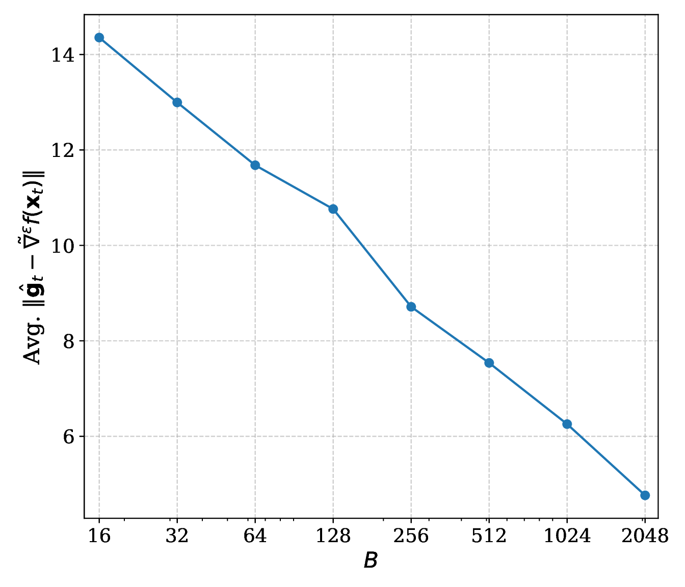
Theorem 5.10
Under \(L\)-smoothness, the Polyak-Lojasiewicz condition, and vanishing finite-difference interval, let \(\tau=n/B-1\). CoCD satisfies
Full budget gives \(\tau=0\) and recovers the standard gradient descent linear rate. With positive smoothing radius, the paper extends the picture with \(L_\epsilon\) and a finite-difference bias term.
The paper evaluates regression and classification workloads, isolates each budget and smoothing control, compares against random-update zeroth-order baselines, and includes a ResNet-20 scale-up run.
SARCOS regression with a 5-layer MLP, plus MNIST and CIFAR-10 classification with a compact CNN.
BCCD isolates stale-gradient reuse, SGD is a first-order oracle reference, and SPSA plus ZO-SGD test randomized ZO updates.
The smoothing radius \(\epsilon\), momentum \(\gamma\), compute budget \(B\), and memory ratio \(M=m/n\) are varied.
Main experiments run for 50 epochs with aligned learning rate and weight decay across CoCD, BCCD, and SGD. Batch size is 64 for SARCOS and 128 for classification. The paper uses PyTorch on one NVIDIA RTX PRO 6000 Blackwell GPU; its BCCD main-results baseline uses \(\epsilon=10^{-6}\).
| Dataset | LR | \(\gamma\) | \(\epsilon\) | Budget |
|---|---|---|---|---|
| SARCOS | 0.001 | 1.0 | 1.0 | 64 (about 0.5%) |
| MNIST | 0.01 | 0.99 | 0.1 | 256 (about 1.3%) |
| CIFAR-10 | 0.01 | 0.99 | 0.1 | 1024 (about 4.2%) |
| Dataset | BCCD | CoCD | SGD oracle |
|---|---|---|---|
| SARCOS loss | 188.73 | 31.18 | 5.38 |
| MNIST acc. | 27.03% | 95.48% | 99.21% |
| CIFAR-10 acc. | 10.13% | 45.08% | 62.51% |
With aligned learning rates and weight decay, CoCD improves over BCCD on every main task with negligible additional epoch time. The SARCOS plot shows the distinctive smoothing effect: the large radius \(\epsilon=1\) hurts BCCD but gives CoCD its lowest validation loss.
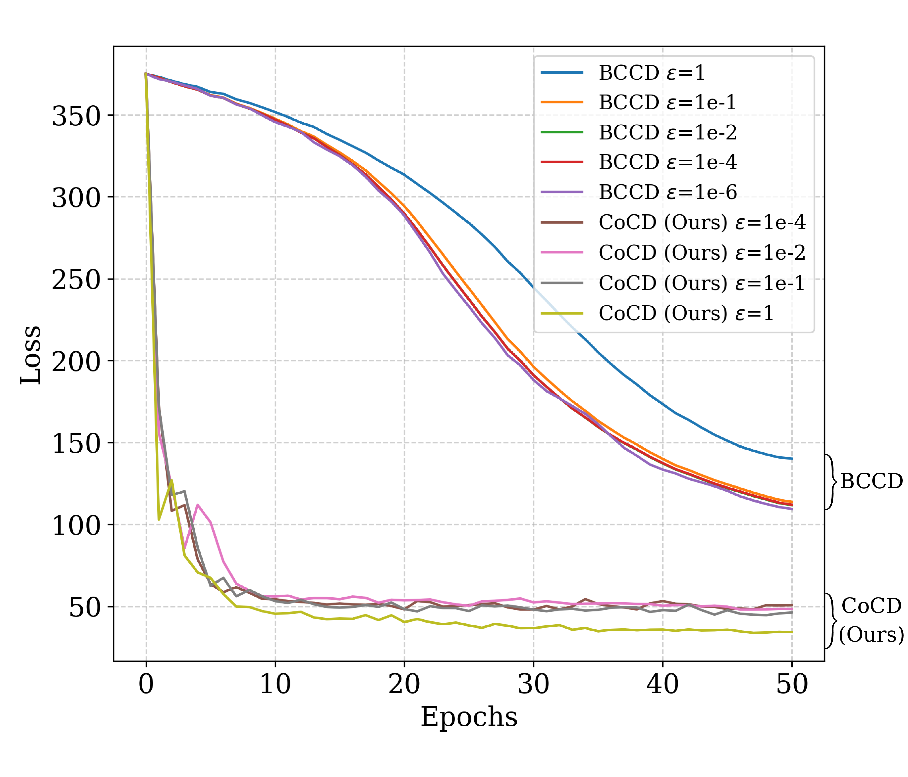
On SARCOS, larger \(\epsilon\) improves the MLP trajectory; on MNIST, smaller radii can improve final accuracy while larger radii smooth the curve. Momentum supplies the strongest speed and robustness gain. Compute budget sets a stability threshold, and a reduced memory ratio adds noise without eliminating convergence.
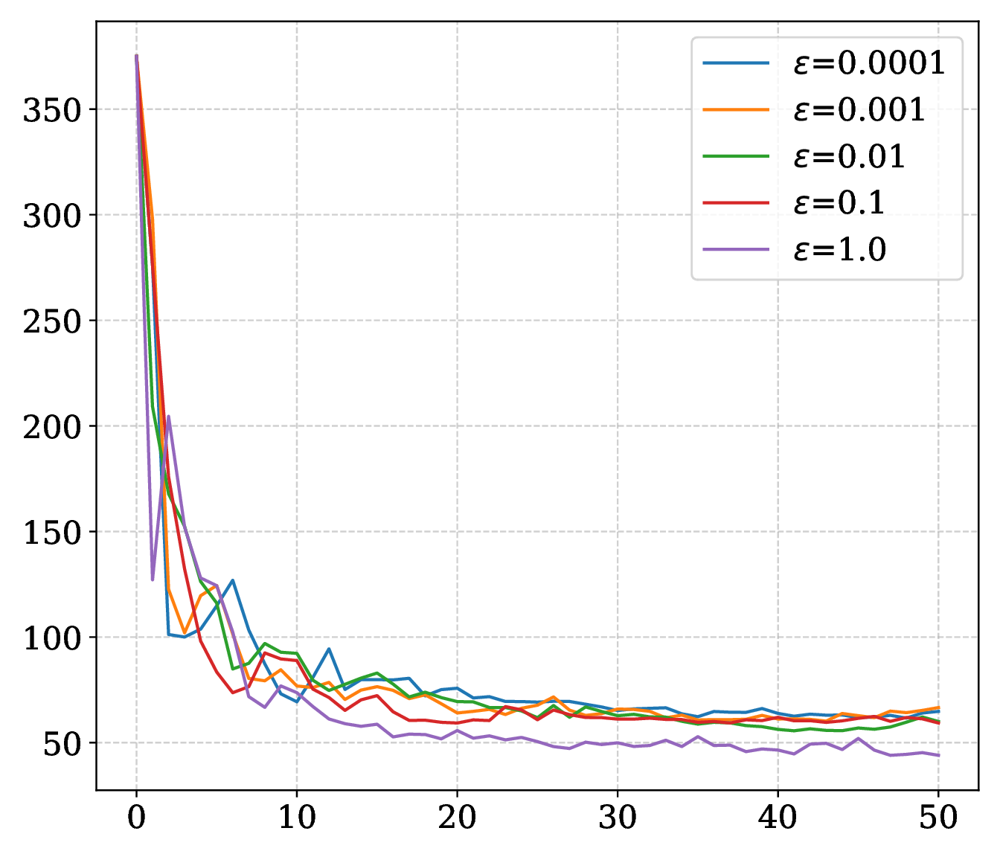
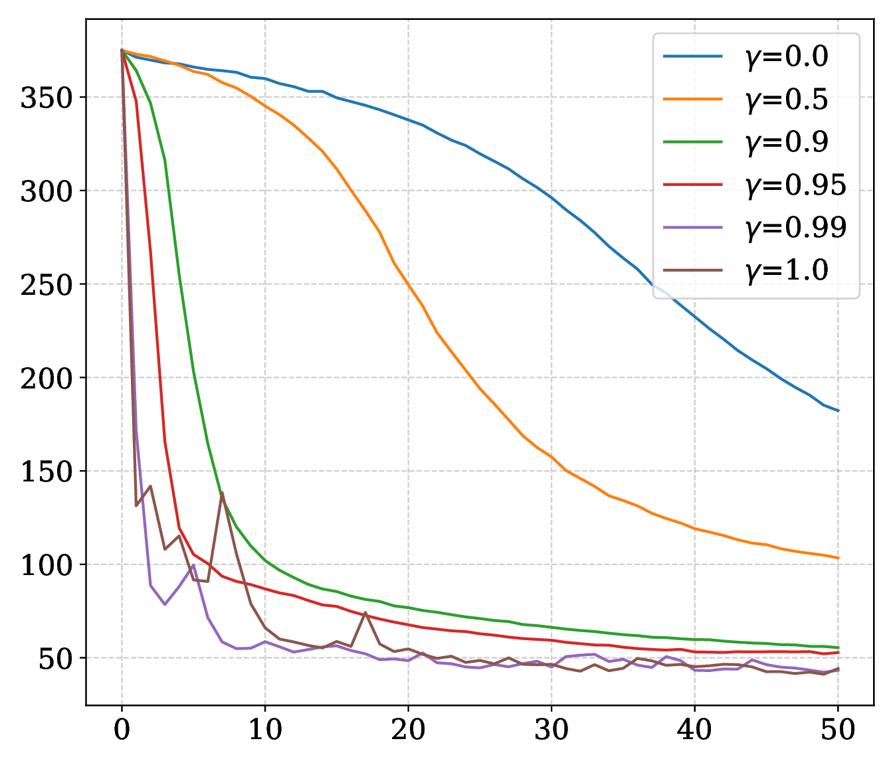
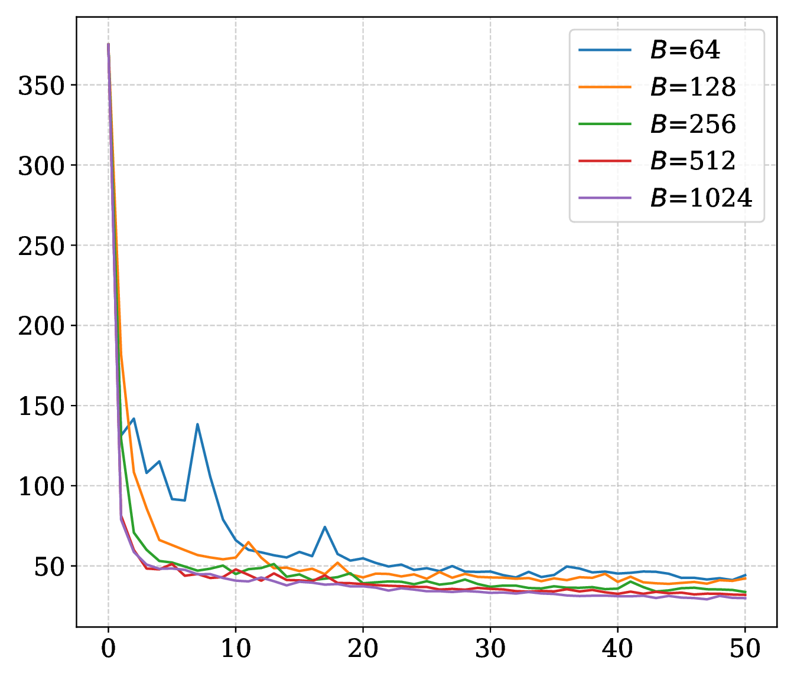
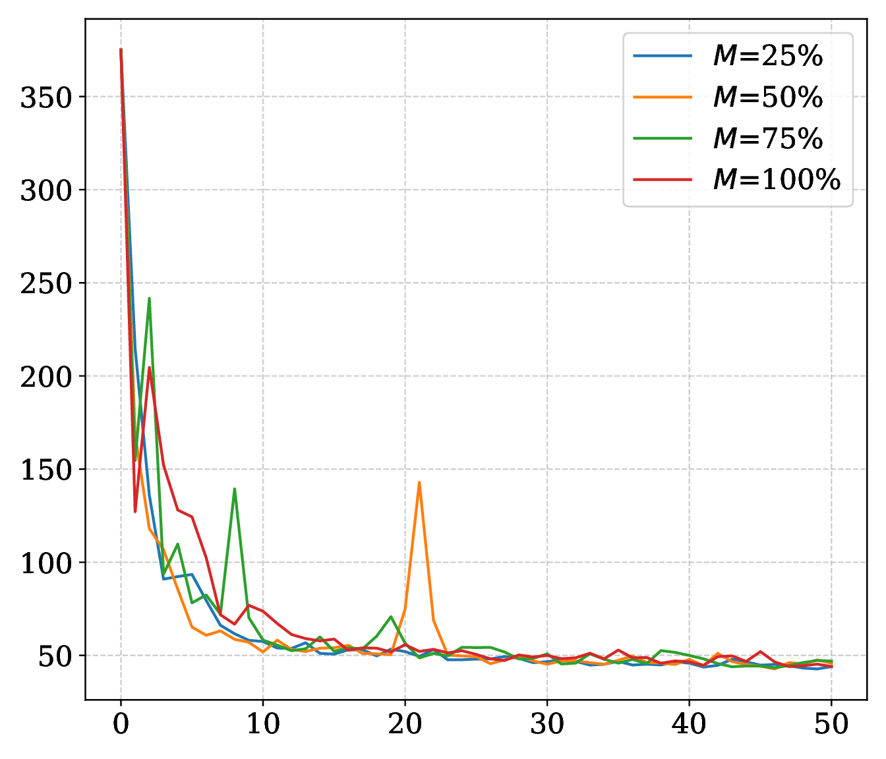
CNN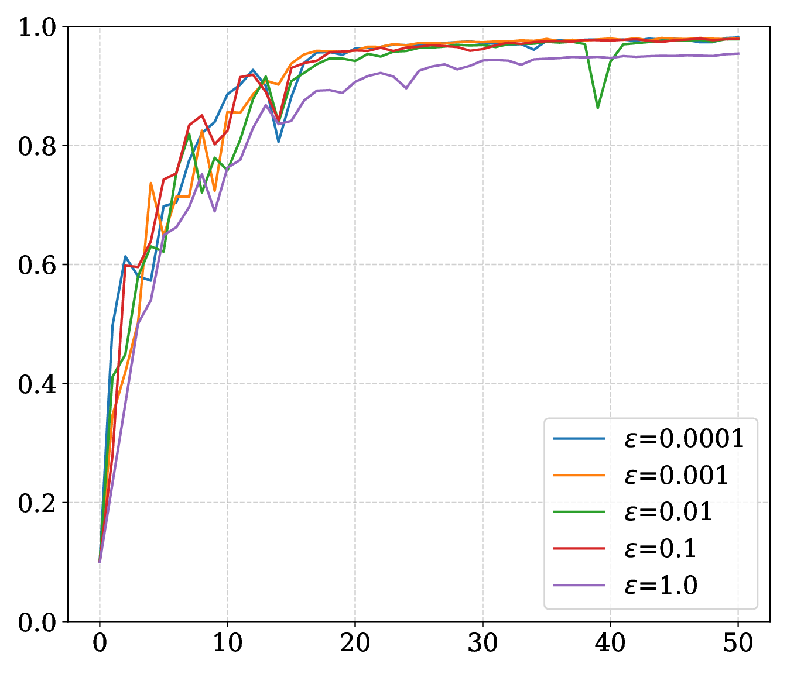
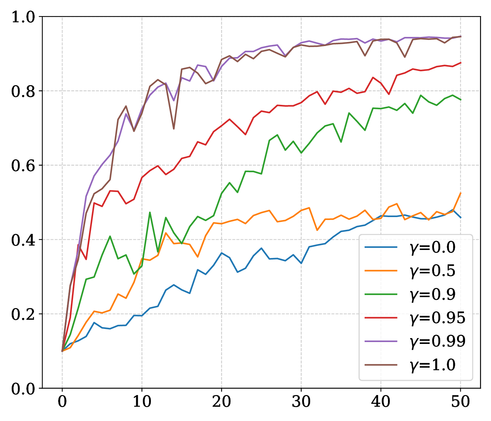
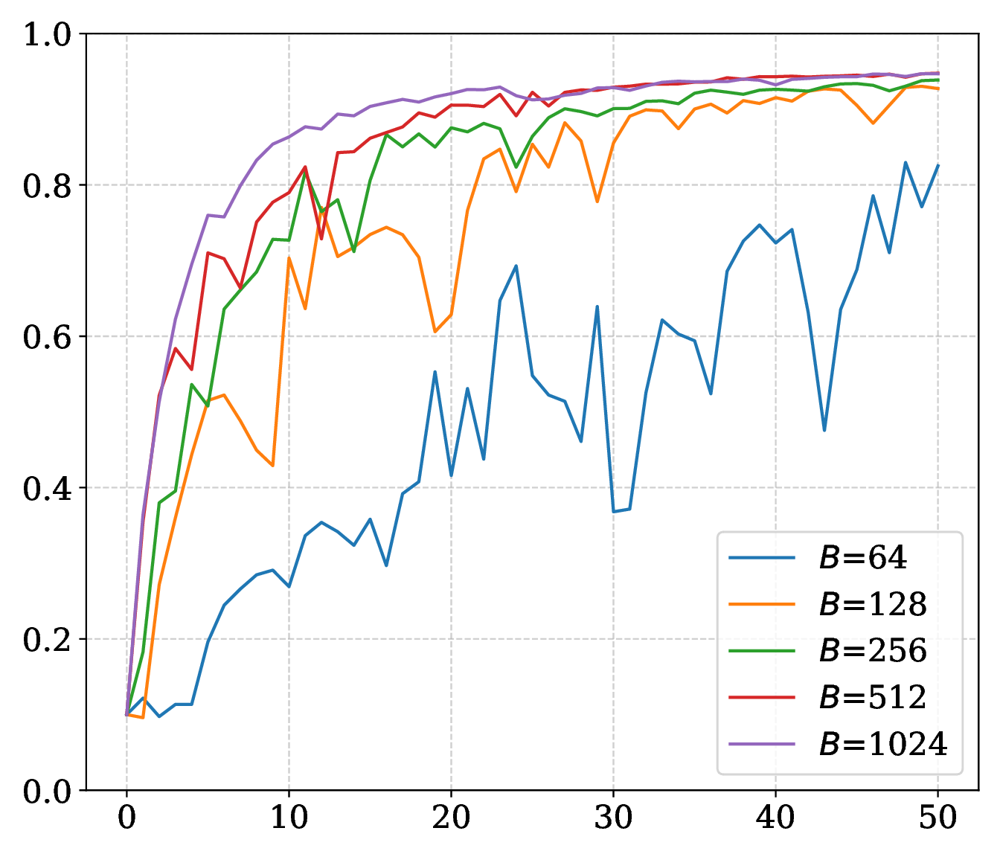
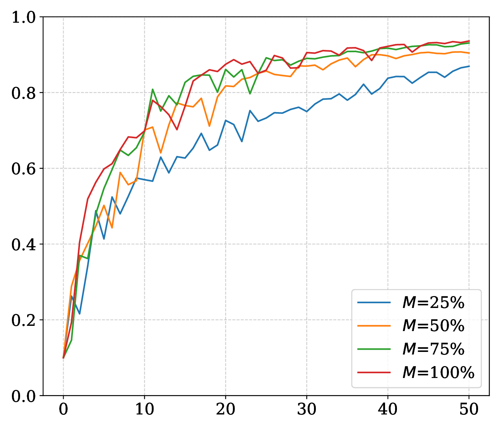
Under matched function-evaluation budget on SARCOS, CoCD stays stable while SPSA and ZO-SGD diverge mid-run. ZO-SGD also needs dense Gaussian smoothing samples; the paper reports 8.1 seconds per episode for CoCD versus 15.7 for ZO-SGD.
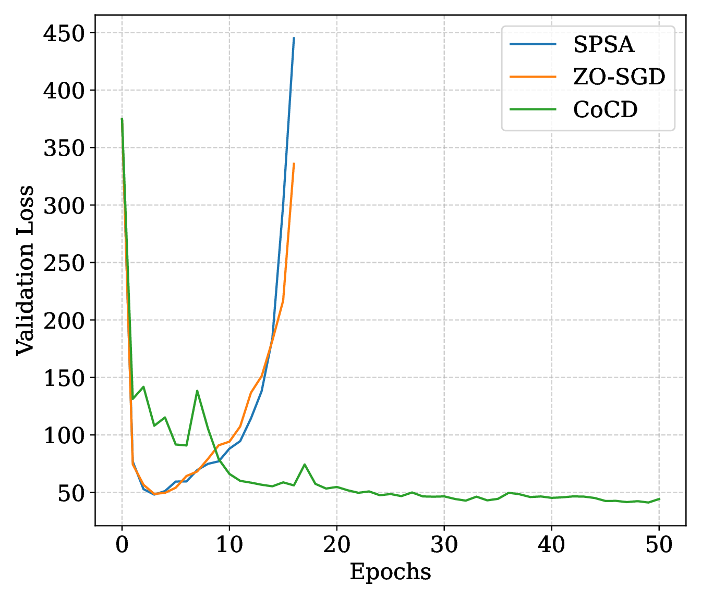
A CIFAR-10 ResNet-20 run reaches about 270k trainable parameters. With \(B=2048\), \(\epsilon=1.0\), and momentum choices up to \(0.95\), CoCD remains stable and beats BCCD within the 10-episode window.
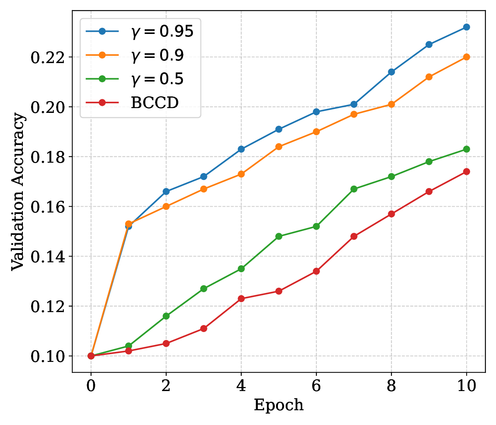
Chen Liang thanks Serena (Weiying) Wu for the help of Figure 2 in the paper, and the emotional support provided near the submission deadline.
@inproceedings{liang2026cocd,
title={Turning Stale Gradients into Stable Gradients: Coherent Coordinate Descent with Implicit Landscape Smoothing for Lightweight Zeroth-Order Optimization},
author={Liang, Chen and Sun, Xiatao and Wang, Qian and Rakita, Daniel},
booktitle={Proceedings of the 43rd International Conference on Machine Learning},
year={2026},
publisher={PMLR}
}